通年の銘菓
|
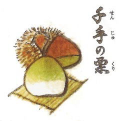
千手の栗第21回全国菓子大博覧会【国務大臣・経済企画庁長官賞】 受賞銘菓 柔らかに煮込んだ一粒栗を、ひとつひとつ栗あんで包み、それをミルク生地で包み、こんがりと風味豊かに焼き上げました。 |
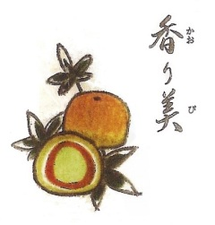
香り美くせのないクリームチーズのまわりをカフェオレあんで包み、人参から抽出したベータカロチンで色づけしたオレンジ色の生地で包み焼き上げました。ワンポイントに松の実をあしらった香り高いお菓子です。 |
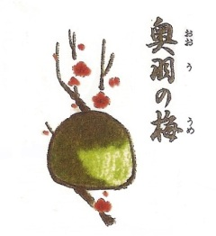
奥羽の梅自然の恵の青梅の蜜づけとミルクのあんをハチミツの生地に活かし、けしの実をそえ、風味豊かに焼き上げました。※種にご注意ください。 |
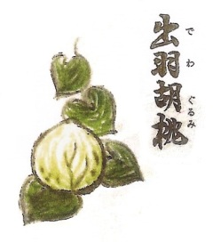
出羽胡桃第22回全国菓子大博覧会【大臣栄誉賞】 受賞銘菓 くるみの形に焼き上げた皮に、東北地方特産の和胡桃を豊富に練り込んだあんを使用しました。 特製和胡桃最中です。 |
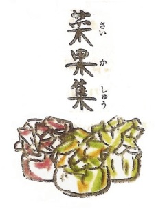
菜果集野菜をベースにしたお菓子です。天然素材の風味をにがさぬようホイル焼をしました。 お茶をはじめ紅茶、コーヒー、ミルク等、何にでもマッチし、ヘルシーにお召し上がりいただけます。 ・黄の包装／人参生地に南瓜あん ・緑の包装／ほうれん草生地にゴマあん ・薄紅の包装／シソ生地に杏あん ※夏の間のみお休み |
|
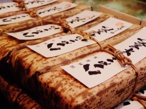
八右エ門羊羹第26回全国菓子大博覧会【名誉総裁賞】 受賞銘菓 和胡桃を贅沢に練り込んだ羊羹です。 昔からファンの多い人気のお菓子です。是非ご賞味ください。 |
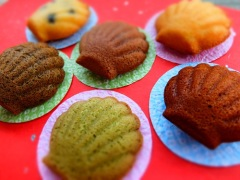
米（マイ）どれーぬ第３回やまがた土産菓子コンテスト 優良賞 受賞 山形県産の大豆粉と米粉を使用した和風マドレーヌ。 季節によって味が変わりますので、お気に入りの味を探してくださいね！ 小麦粉 不使用です。 |
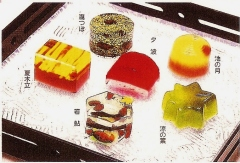
季節の上生四季折々でかわる八右エ門の上生菓子。毎月かわって見た目もとってもキレイな上生菓子は、見て楽しく食べて美味しく、たくさんのお客様に大人気です。 |
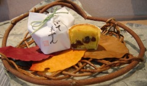
い芋のみーつけた！
第24回全国菓子大博覧会 |
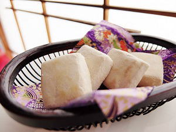
ほろほろん和三盆を贅沢に使用した和のクッキーです。上品な甘さと口どけ、やさしく広がるおいしさです。 卵・小麦粉 不使用です。 |
|
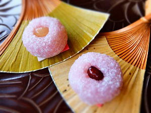
玉菊餅菊の花をイメージしたお菓子です。 皮付きさつま芋入りの白餡を道明寺で包み、かのこ豆を添えました。 |
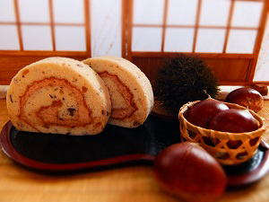
渋皮栗ロ～る |
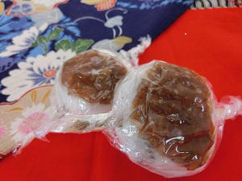
上用田楽 |
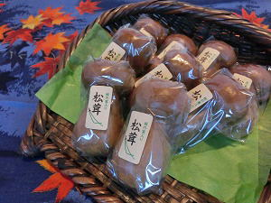
松茸 |
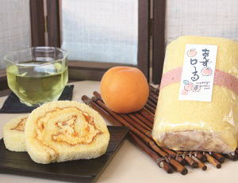
あんずロ～る八右エ門のレトロ～るシリーズにあんずロ～るが登場。 あんずピューレ入りのふわふわ生地と、刻んだ蜜漬けあんずの食感が感じられるコクのあるバタークリームの相性が抜群！ 甘酸っぱさがくせになる爽やかなロールケーキ。 冷凍販売ですので、そのままアイス感覚で、もしくは半解凍でひんやりと頂いても美味しいですよ。 |